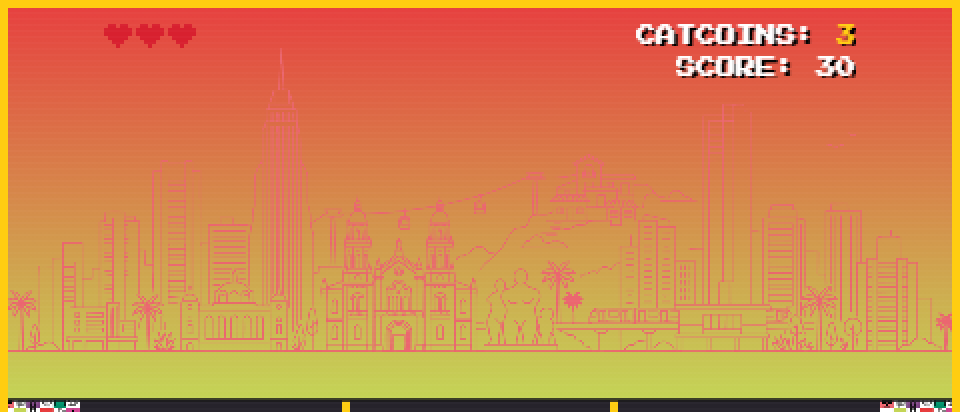
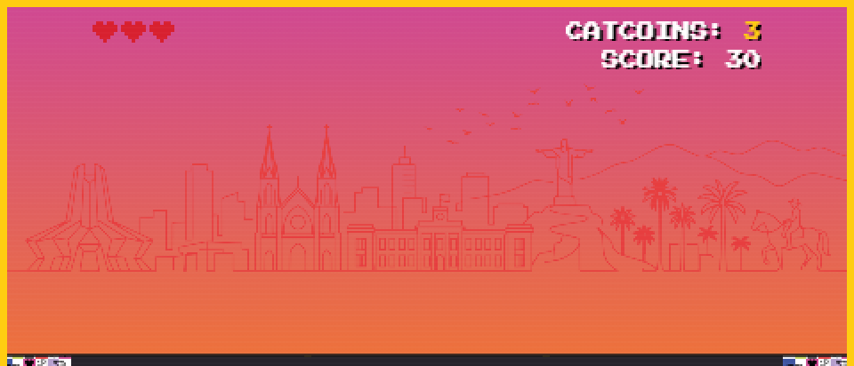
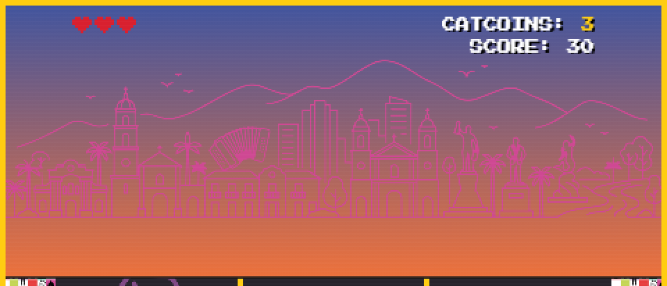
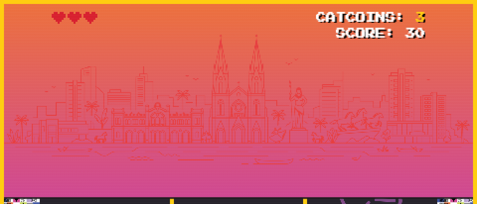

#1
Crítico
Diseño
Cuatro siluetas de ciudad casi no se ven sobre su cielo
- Qué pasa
- Con la paleta enviada, el color de la silueta queda casi igual al del cielo en Medellín, Villavicencio, Valledupar y Neiva. Bogotá, Cali, Ibagué y Montería sí se leen.
- Qué dice la guía
- Sección 6: tres colores por ciudad (cielo arriba, cielo abajo y silueta) para que cada nivel se sienta distinto.
- Qué pedir
- Revisar el color de la silueta en esas cuatro ciudades para que contraste con ambos tonos del cielo, y confirmar que el orden de los tres códigos del
.txtes cielo arriba, cielo abajo y silueta.



